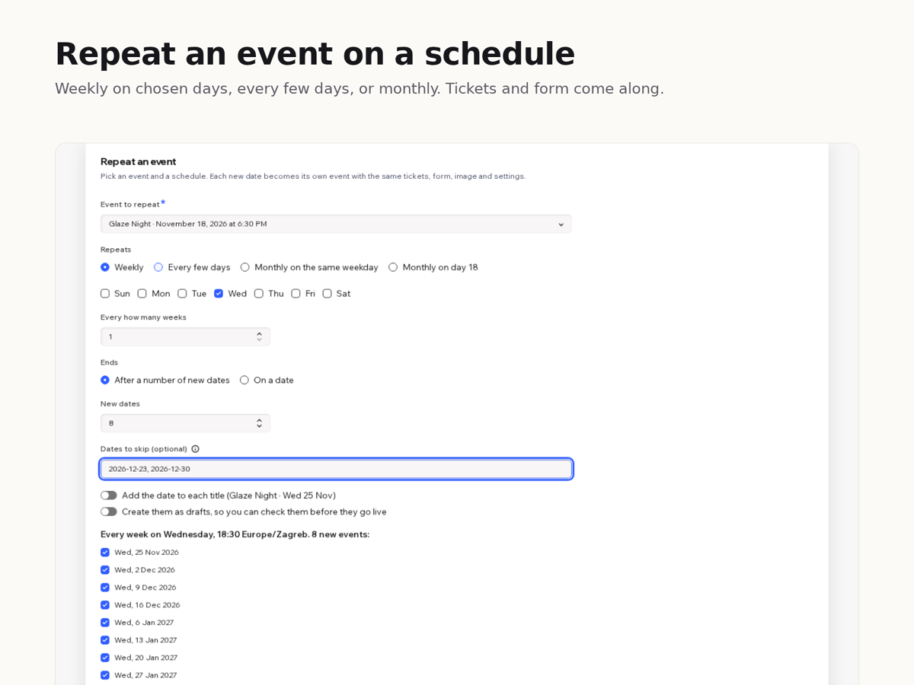

Event Series
Copy events to new dates and bulk edit many
- Copy any event, even a past one, to new dates
- Tickets, form and image copied to each date
- Weekly or monthly patterns; skip dates; preview
- Bulk edit title, time, place or description

What it does
Already have an event set up the way you like, even one that has passed? Event Series copies it to many new dates in one go, with its tickets, registration form and image, so you never rebuild it by hand. And when the same change applies to many separate events, you make it once instead of opening each event.
Pick any event, then a pattern: every Wednesday, every three days, the second Saturday of each month, or the 18th of each month. Choose how many dates or an end date, list dates to skip, and check the preview. Each date becomes its own event at the same local time, even when the clocks change. You can add the date to each title and create drafts to review first.
To change many events, search, tick the ones you want and switch on only what should change: new title or replaced words, start time and length, short description, or the location or full description of one event copied to the others. You can also cancel or delete the selected events.
Free: up to 6 copies per run and 10 events per edit. Premium: up to 200 copies per run and any number of edits.
Price
Free
- Repeat an event up to 6 times per run
- Edit, cancel or delete up to 10 events at once
- Weekly, daily and monthly patterns, skip dates, drafts
Premium
$6/month, $5/month billed yearly. For weekly classes and busy calendars
- Repeat an event up to 200 times per run
- Edit, cancel or delete any number of events at once
- Everything in the free plan